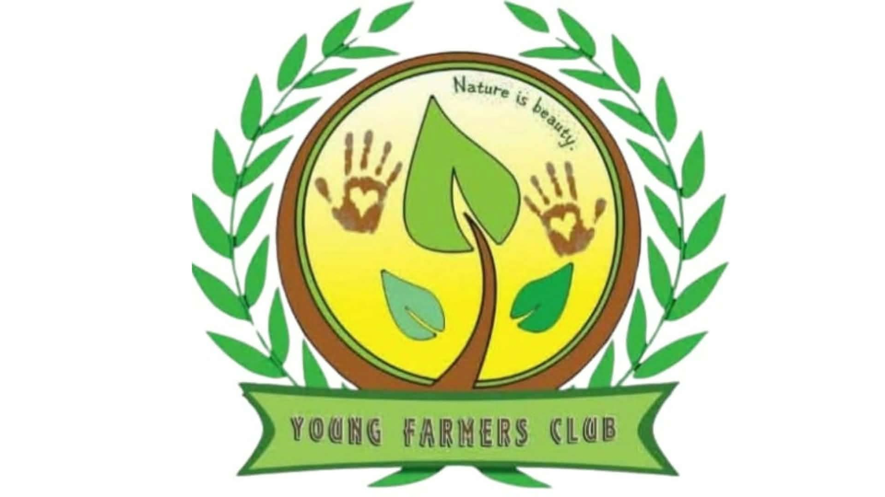

YOUNG FARMERS CLUB • STUDENT ORGANIZATION
Young Farmers Club
About the Club

The Young Farmers Club is a school-based student organization responsible for managing the Gulayan sa Paaralan Program, which promotes food security, environmental awareness, and sustainable gardening practices within the school community. Members actively participate in preparing planting beds, sowing seeds, watering crops, and maintaining organic vegetable gardens to ensure healthy plant growth. They also harvest mature vegetables and supply them to support the school's feeding and nutritional programs. Through these activities, the club aims to help combat malnutrition by providing students with access to fresh and nutritious vegetables while fostering a sense of responsibility, teamwork, and environmental stewardship among its members.
Activities
- Crop production demos: vegetable gardening, rice, corn, hydroponics, and urban gardening.
- Livestock and poultry raising: chicken, pig, goat, and fish culture.
- Organic farming: composting, natural pesticides, and vermiculture.
- Agri-entrepreneurship: Turning harvests into products like chips, jam, and soap.
- Farm machinery training: Proper use of tillers, sprayers, and small equipment.
Missions of the Young Farmers Club
- Main Mission
- Empower young Filipinos to become active, innovative, and sustainable leaders in agriculture, agribusiness, and rural development.
- Key Pillars of the Mission
- Youth Empowerment & Skills Development: Developing leadership, practical farming techniques, and essential life skills through hands-on learning (Head, Heart, Hands, and Health).
- Agri-Entrepreneurship: Providing financial grants, capital, and training to turn innovative farming and fishery ideas into profitable businesses.
- Sustainable & Modern Practices: Encouraging climate-resilient farming, smart technologies, and eco-friendly practices to modernize the local agricultural sector.
- Community & Rural Growth: Building strong networks of young farmers who contribute to local food production and uplift rural economies.